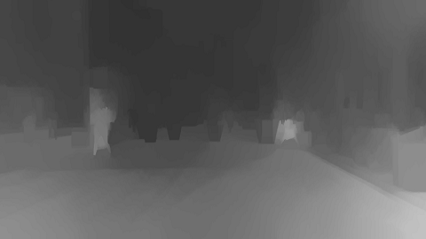
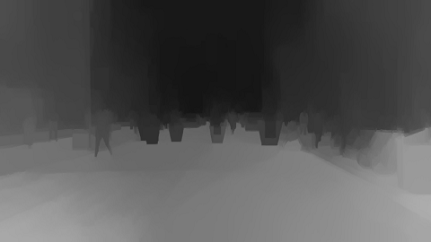
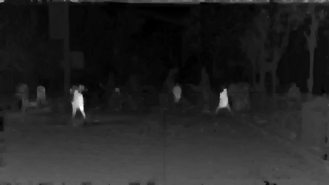

Back
Street Results
DBIR Comparison Page
Source Footage

Online Interpolation
Depth map generated using online interpolation.

Temporal Interpolation
Depth map generated using temporal interpolation.

ACTS
Depth map obtained through the ACTS software package.